3D hand-object interaction data is scarce due to the hardware constraints in scaling up the data collection process. In this paper, we propose HOIDiffusion for generating realistic and diverse 3D hand-object interaction data. Our model is a conditional diffusion model that takes both the 3D hand-object geometric structure and text description as inputs for image synthesis. This offers a more controllable and realistic synthesis as we can specify the structure and style inputs in a disentangled manner. HOIDiffusion is trained by leveraging a diffusion model pre-trained on large-scale natural images and a few 3D human demonstrations. Beyond controllable image synthesis, we adopt the generated 3D data for learning 6D object pose estimation and show its effectiveness in improving perception systems.
We inject three conditional encoders into the stable diffusion model. We utilize both the HOI datasets and high-quality background images to train HOIDiffusion. The background images are synthesized using the scenery prompts from pretrained model. The texts sent to the model are output by LLaVA for detailed description.
We propose a two-stage pipeline to synthesize hand-object-interaction data. During the first stage, we utilize a pretrained GrabNet to output 3D hand poses given by a single object model. Then in the second stage, we use those 3D hand poses along with segmentation maps, normal maps and skeletons to conditionally generate high-quality HOI data.
Generated images with the same background description but different object shapes, poses, and hand skeletons. HOIDiffusion could generate more realistic images similar to the style in training datasets.
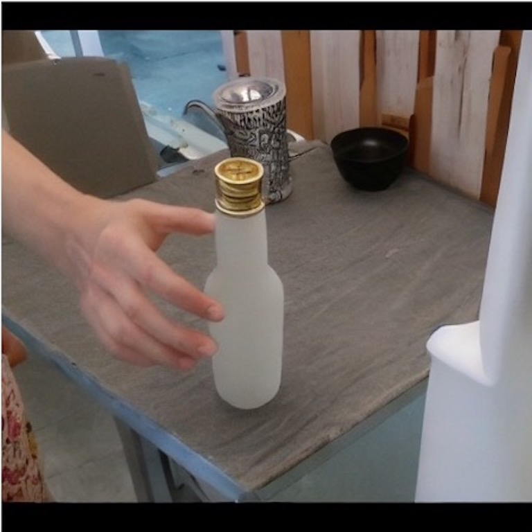
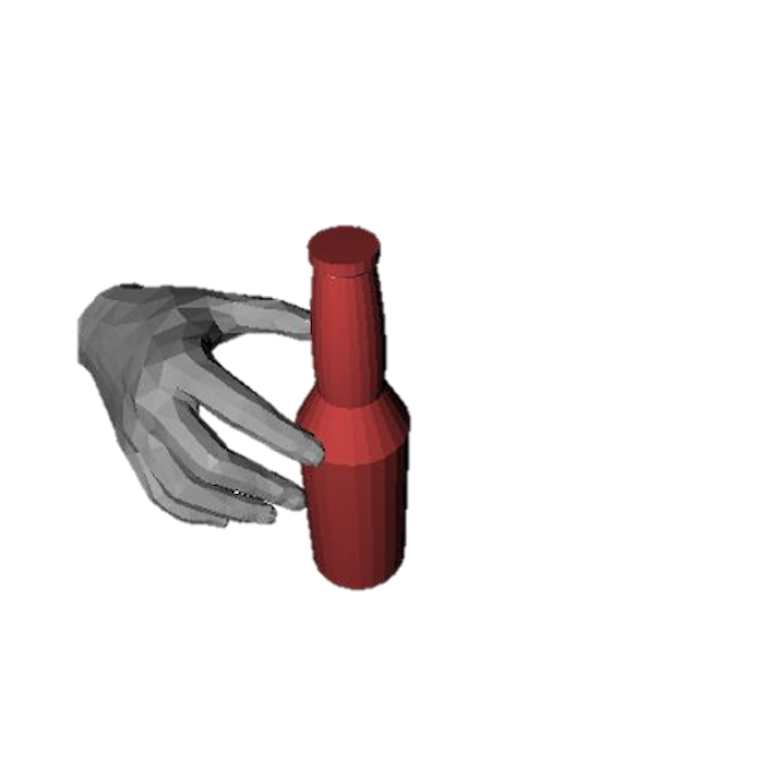
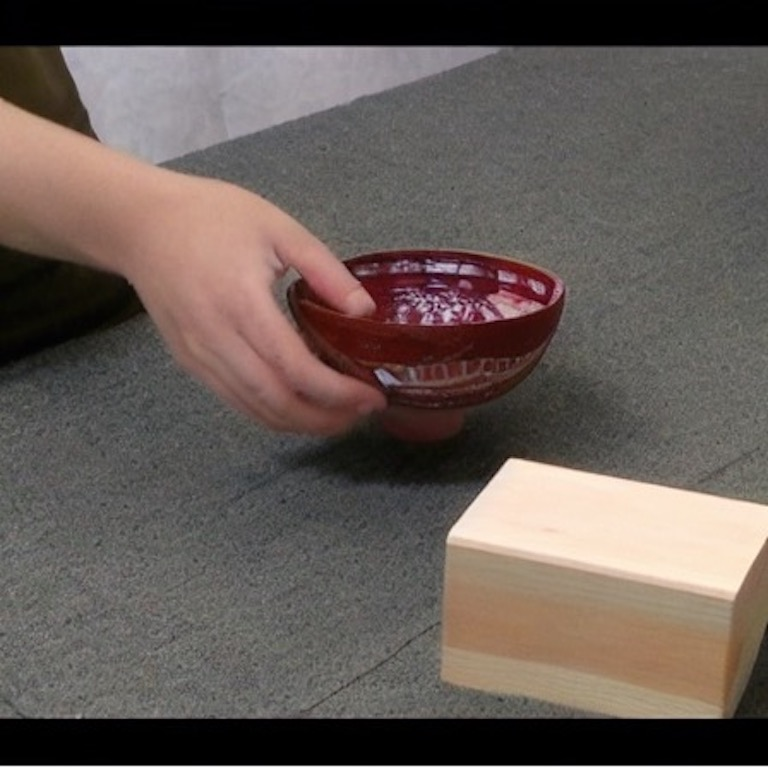
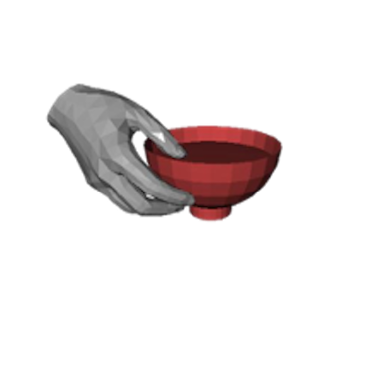
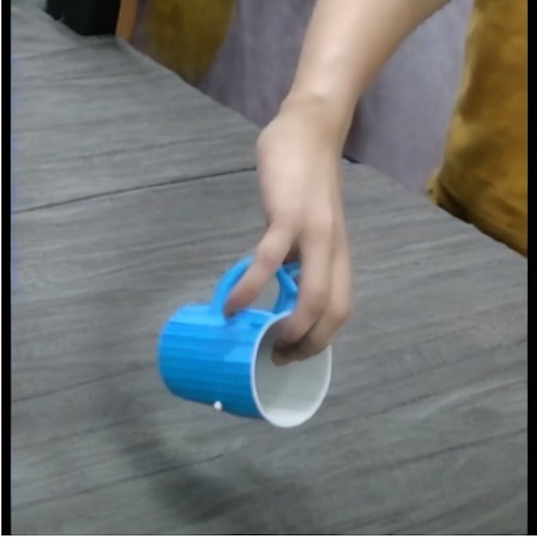
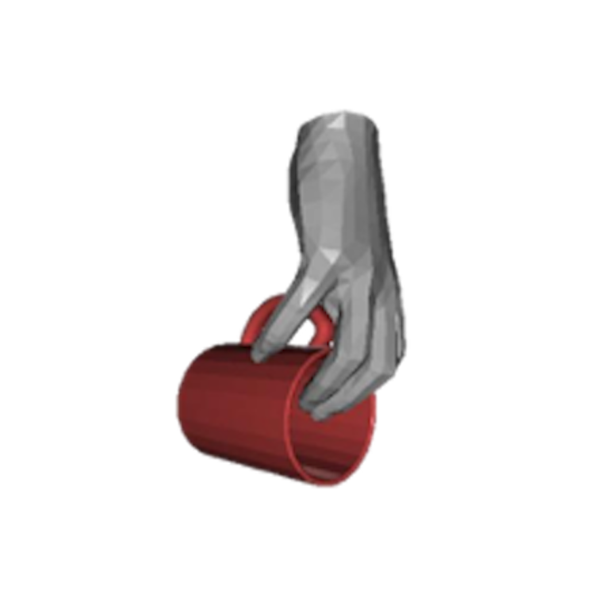
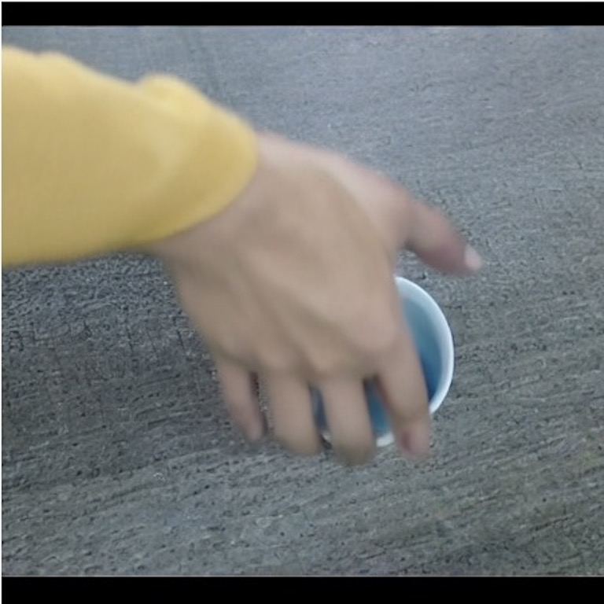
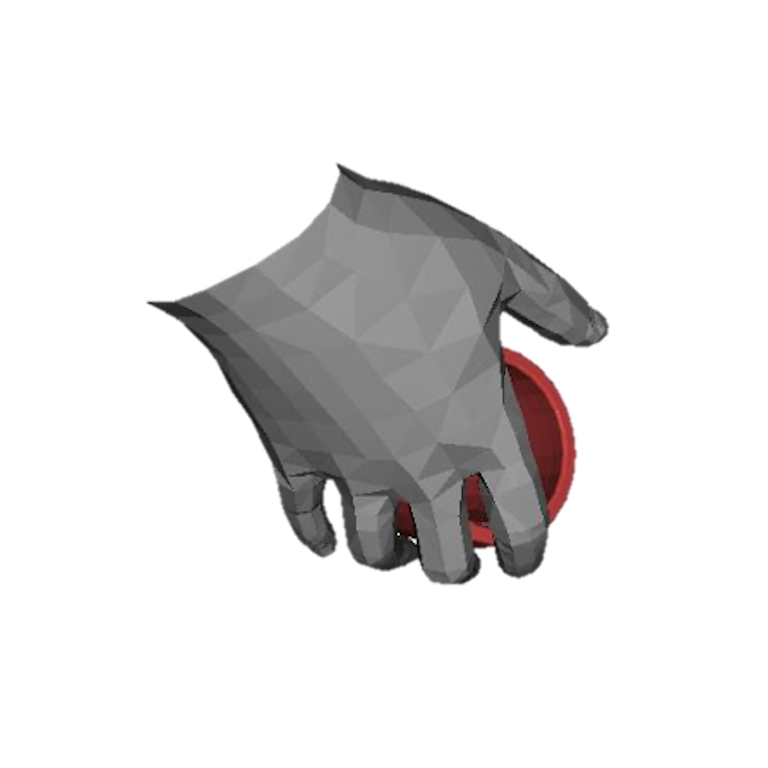
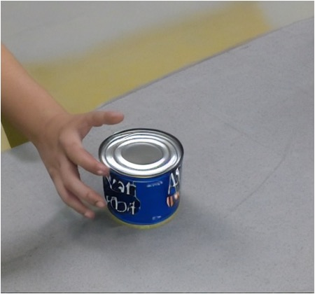
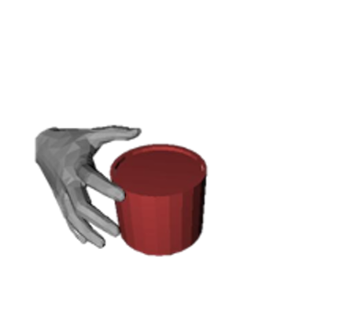
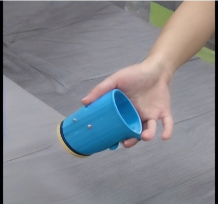
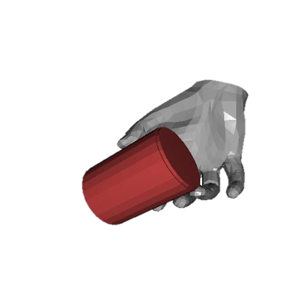
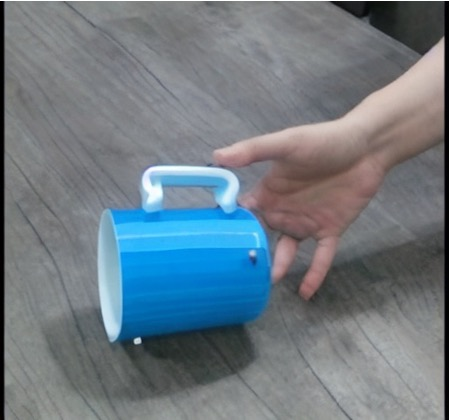
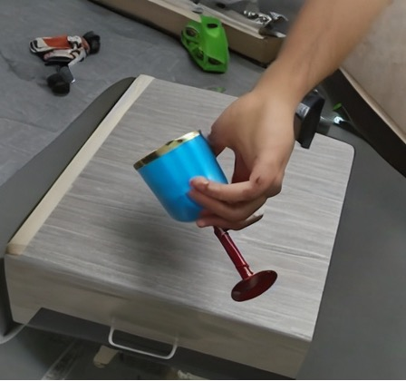
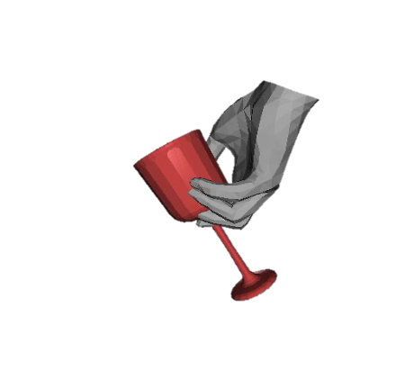
We explore the ability of HOIDiffusion to control the appearance of objects, with different colors or styles unseen in training data.
We present generated hand-object-interaction images with diverse background prompts, from everyday scenarios to special contexts.
We leverage zero-shot video generation techniques in the diffusion model to establish inter-consistency among frames. Therefore we could obtain video format data of a complete fetching process to the object.
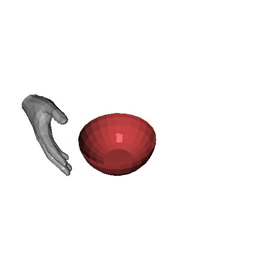
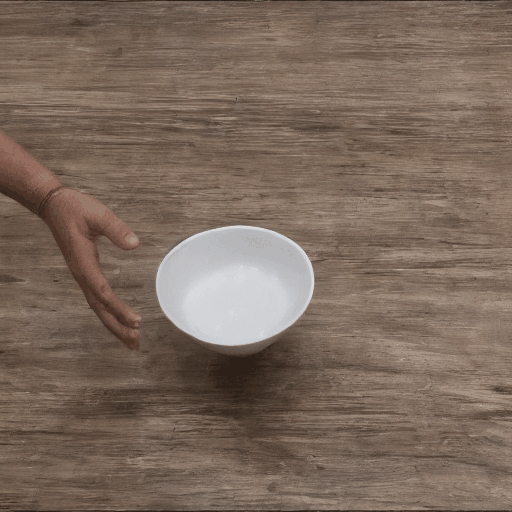
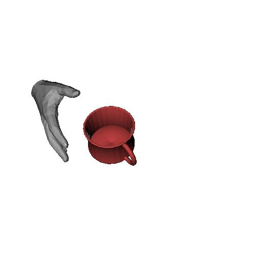
We explore the potential for improving categorical object 6D pose estimation task with our generated HOI data, anticipating the reality brought by our data could help enhance model performance.